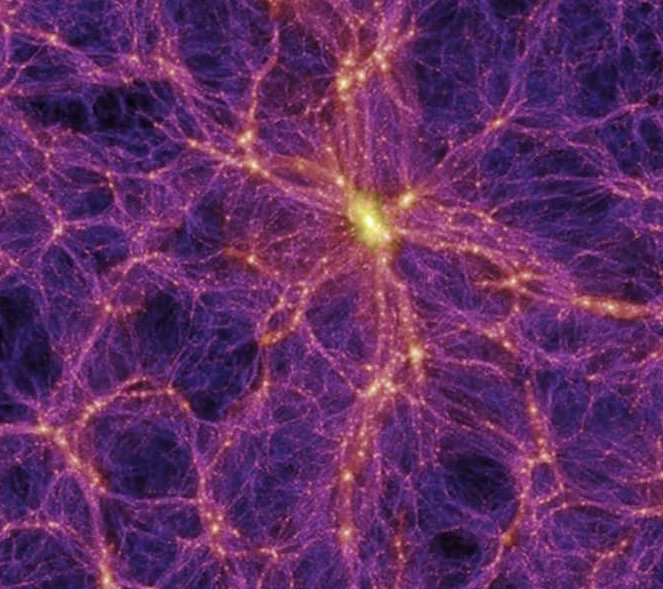
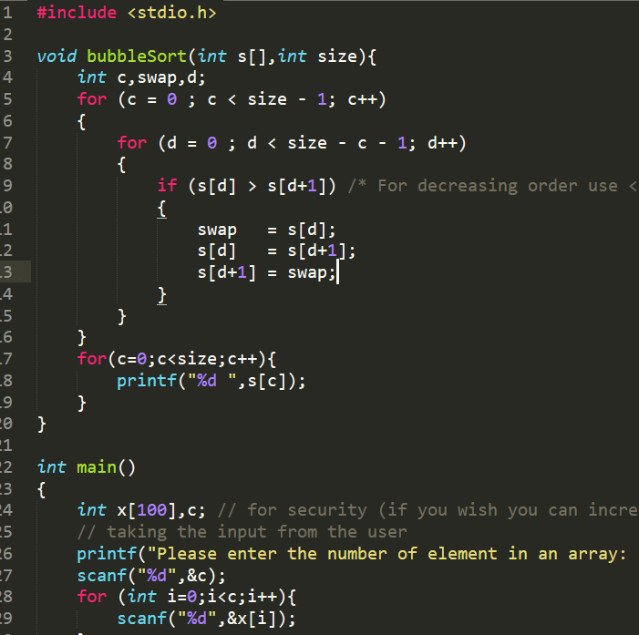
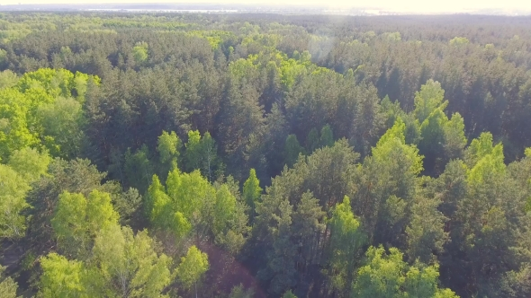

Research
A selection research projects
Relax-ae: A fast 1D photoevaporative atmospheric escape code
Research Project (2023)

Icelines in the presence of Protoplanetary Disk Gaps
Master's Thesis Project

Wide Binary Disruption in the Milky Way
Princeton Senior Thesis
Additional Projects
A list of current outreach and other projects
-

Native Star Stories Night
A brief introduction to observational and theoretical cosmology
-

UC Ask an Astronomer
Learn how to code in Python with guides to numpy, matplotlib, pandas, scipy, and astropy. Guide to Cython in progress
-

Education & Pedegogy
Learn the basics of how to code in C with this introductory guide (work in progress)
-

Resources for Undergraduate Students
Notes and exam materials for the Physics GRE. General materials here!
-
Science & Other Writing
View the work of PSCI, an advocacy group for environmental legislation in New Jersey, including a White Paper on a Carbon Fee and Dividend policy
-

Carbon Neutrality and Agriculture
Classifying the sources of agricultural emissions in France and Germany to develop a feasible roadmap for carbon neutrality by 2050.
-

Wildlife Image Detection
Developing software to search for wildlife trafficking online.
Blog
In case anyone is interested, here is my blog (to be organised in a more orderly way before long!). Here are some blog posts related to astrophysics, computing, climate change, and issues of general trivia.
Contact
Sam Moore
Astrophysicist